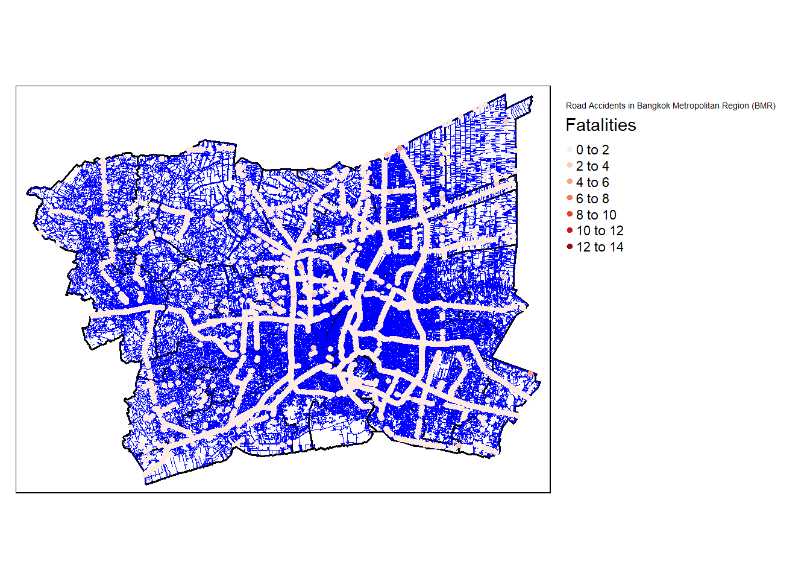

pacman::p_load(sf, spNetwork, tmap, tidyverse, dplyr)Take-home Exercise 1
1 Overview
Road traffic accidents are a major global health issue, causing millions of deaths and injuries each year. The majority of fatalities occur in low- and middle-income countries, particularly among vulnerable road users. These accidents not only lead to human suffering but also impose a significant economic burden on individuals, families, and nations. Thailand, in particular, has a high rate of road traffic deaths, with a significant portion of accidents occurring on national highways and in designated “black spots.”
2 Objective
The objective of this project is to investigate the factors influencing road traffic accidents in the Bangkok Metropolitan Region (BMR) using spatial and spatio-temporal point pattern analysis.
Visualize spatio-temporal dynamics: Use statistical graphics and geovisualization methods to depict the distribution of road traffic accidents over time and space.
Conduct spatial analysis: Employ network-based spatial point pattern analysis methods to examine the spatial distribution of accidents within the road network.
Conduct spatio-temporal analysis: Utilize temporal network-based spatial point pattern analysis methods to explore the relationship between accidents and both spatial and temporal factors.
3 The Data
Three basic data sets are used, they are:
4 Installing and launching the R packages
In this exercise, four R packages will be used, they are:
spNetwork, which provides functions to perform Spatial Point Patterns Analysis such as kernel density estimation (KDE) and K-function on network. It also can be used to build spatial matrices (‘listw’ objects like in ‘spdep’ package) to conduct any kind of traditional spatial analysis with spatial weights based on reticular distances.
sf package provides functions to manage, processing, and manipulate Simple Features, a formal geospatial data standard that specifies a storage and access model of spatial geometries such as points, lines, and polygons.
tmap which provides functions for plotting cartographic quality static point patterns maps or interactive maps by using leaflet API.
Use the code chunk below to install and launch the four R packages.
5 Data Import and Preparation
5.1 Importing Thailand Road Accident [2019-2022]
Since acc data set is in csv file format, we will use read_csv() of readr package to import thai_road_accident_2019_2022.csv as shown the code chunk below. The output R object is called acc.
The below code uses the following to:
read_csv(): This function is used to load the CSV file (thai_road_accident_2019_2022.csv) into R. The dataset is stored in a variable calledacc.filter(): This function is from thedplyrpackage and is used to filter the rows of the dataset.!is.na(longitude) & !is.na(latitude): This condition ensures that only rows where bothlongitudeandlatitudeare not missing (NA) are kept. Any rows with missing coordinates will be removed.mutate(): This function is used to create or modify columns in a dataframemonth(incident_datetime): This function extracts the month from theincident_datetimecolumn, and stores it in a new column calledMonth_num(numeric form of the month)month(incident_datetime, label = TRUE, abbr = TRUE): This extracts the month in a labeled form, and it will be abbreviated (e.g., “Jan”, “Feb”). This is stored in a new column calledMonth_facday(incident_datetime): This extracts the day of the month from theincident_datetimecolumn and stores it in a new column calleddayofweekst_as_sf(): This function from thesfpackage is used to convert the dataframe to a simple features (spatial) objectcoords = c("longitude", "latitude"): This argument tellsst_as_sf()to use thelongitudeandlatitudecolumns to define the spatial coordinatescrs = 4326: This specifies the Coordinate Reference System (CRS) for the spatial object. EPSG:4326 refers to WGS 84, which is the standard geographic CRS (latitude and longitude in degrees)st_transform(): This function is used to reproject the spatial object to a different CRScrs = 32647: This specifies the target CRS, which is UTM Zone 47N. This is a projected CRS that uses meters as units and is more appropriate for spatial analysis in Thailand. EPSG:32647 is commonly used for accurate distance and area measurements in this region
acc <- read_csv("Data/rawdata/thai_road_accident_2019_2022.csv") %>%
filter(!is.na(longitude) & !is.na(latitude)) %>% # Filter out rows with missing geographic coordinates
mutate(Month_num = month(incident_datetime)) %>%
mutate(Month_fac = month(incident_datetime, label = TRUE, abbr = TRUE)) %>%
mutate(dayofweek = day(incident_datetime)) %>%
st_as_sf(coords = c("longitude", "latitude"), crs = 4326) %>% # Specify the CRS
st_transform(crs = 32647) # Transform to your desired CRSwrite_rds(acc, "Data/rds/acc.rds")acc <- read_rds("Data/rds/acc.rds")We can identify rows with missing values by applying filter() in combination with is.na() to check each column in your dataset. The function if_any() checks all columns, and if any of the columns contain NA, the corresponding row will be flagged.
# Identify rows with missing values
acc_incomplete <- acc %>%
filter(if_any(everything(), is.na))
# View incomplete rows
acc_incompleteSimple feature collection with 0 features and 19 fields
Bounding box: xmin: NA ymin: NA xmax: NA ymax: NA
Projected CRS: WGS 84 / UTM zone 47N
# A tibble: 0 × 20
# ℹ 20 variables: acc_code <dbl>, incident_datetime <dttm>,
# report_datetime <dttm>, province_th <chr>, province_en <chr>, agency <chr>,
# route <chr>, vehicle_type <chr>, presumed_cause <chr>, accident_type <chr>,
# number_of_vehicles_involved <dbl>, number_of_fatalities <dbl>,
# number_of_injuries <dbl>, weather_condition <chr>, road_description <chr>,
# slope_description <chr>, Month_num <dbl>, Month_fac <ord>, dayofweek <int>,
# geometry <GEOMETRY [m]>After importing the data file into R, it is important for us to examine if the data file has been imported correctly.
The code chunk below shows summary() and list() of Base R.
summary(acc) acc_code incident_datetime
Min. : 571834 Min. :2019-01-01 00:00:00.00
1st Qu.:3789326 1st Qu.:2020-01-16 14:57:30.00
Median :3823434 Median :2021-01-02 18:30:00.00
Mean :4228913 Mean :2021-01-08 11:25:47.25
3rd Qu.:5830777 3rd Qu.:2022-01-02 19:17:00.00
Max. :7571316 Max. :2022-12-31 23:55:00.00
report_datetime province_th province_en
Min. :2019-01-01 03:05:00.00 Length:81376 Length:81376
1st Qu.:2020-03-16 15:27:00.00 Class :character Class :character
Median :2021-03-31 08:39:00.00 Mode :character Mode :character
Mean :2021-03-26 16:52:04.98
3rd Qu.:2022-03-01 10:02:15.00
Max. :2023-01-26 13:20:00.00
agency route vehicle_type presumed_cause
Length:81376 Length:81376 Length:81376 Length:81376
Class :character Class :character Class :character Class :character
Mode :character Mode :character Mode :character Mode :character
accident_type number_of_vehicles_involved number_of_fatalities
Length:81376 Min. : 0.000 Min. : 0.0000
Class :character 1st Qu.: 1.000 1st Qu.: 0.0000
Mode :character Median : 1.000 Median : 0.0000
Mean : 1.535 Mean : 0.1461
3rd Qu.: 2.000 3rd Qu.: 0.0000
Max. :27.000 Max. :13.0000
number_of_injuries weather_condition road_description slope_description
Min. : 0.0000 Length:81376 Length:81376 Length:81376
1st Qu.: 0.0000 Class :character Class :character Class :character
Median : 0.0000 Mode :character Mode :character Mode :character
Mean : 0.8139
3rd Qu.: 1.0000
Max. :51.0000
Month_num Month_fac dayofweek geometry
Min. : 1.000 Dec : 9621 Min. : 1.00 POINT :81376
1st Qu.: 3.000 Apr : 9403 1st Qu.: 8.00 epsg:32647 : 0
Median : 6.000 Jan : 8494 Median :15.00 +proj=utm ...: 0
Mean : 6.469 Mar : 6468 Mean :15.72
3rd Qu.:10.000 Oct : 6293 3rd Qu.:24.00
Max. :12.000 Jul : 6255 Max. :31.00
(Other):34842 list(acc)[[1]]
Simple feature collection with 81376 features and 19 fields
Geometry type: POINT
Dimension: XY
Bounding box: xmin: -16183190 ymin: -936.228 xmax: 1200243 ymax: 4918525
Projected CRS: WGS 84 / UTM zone 47N
# A tibble: 81,376 × 20
acc_code incident_datetime report_datetime province_th province_en
* <dbl> <dttm> <dttm> <chr> <chr>
1 571905 2019-01-01 00:00:00 2019-01-02 06:11:00 ลพบุรี Loburi
2 3790870 2019-01-01 00:03:00 2020-02-20 13:48:00 อุบลราชธานี Ubon Ratchathani
3 599075 2019-01-01 00:05:00 2019-01-01 10:35:00 ประจวบคีรีขันธ์ Prachuap Khiri …
4 571924 2019-01-01 00:20:00 2019-01-02 05:12:00 เชียงใหม่ Chiang Mai
5 599523 2019-01-01 00:25:00 2019-01-04 09:42:00 นครสวรรค์ Nakhon Sawan
6 571982 2019-01-01 00:30:00 2019-01-07 12:46:00 แม่ฮ่องสอน Mae Hong Son
7 612782 2019-01-01 00:30:00 2019-10-25 14:25:00 ชุมพร Chumphon
8 599235 2019-01-01 00:35:00 2019-01-02 16:23:00 สิงห์บุรี Sing Buri
9 600643 2019-01-01 00:40:00 2019-01-11 10:01:00 สงขลา Songkhla
10 599105 2019-01-01 00:45:00 2019-01-01 10:11:00 ตราด Trat
# ℹ 81,366 more rows
# ℹ 15 more variables: agency <chr>, route <chr>, vehicle_type <chr>,
# presumed_cause <chr>, accident_type <chr>,
# number_of_vehicles_involved <dbl>, number_of_fatalities <dbl>,
# number_of_injuries <dbl>, weather_condition <chr>, road_description <chr>,
# slope_description <chr>, Month_num <dbl>, Month_fac <ord>, dayofweek <int>,
# geometry <POINT [m]>acc_code: Unique identifier for each accident. Useful for tracking individual incidents.incident_datetime: Date and time of the accident. Important for temporal analysis (e.g., analyzing accidents by time of day or day of the week).province_en: The province where the accident occurred. You’ll need this to filter accidents within the Bangkok Metropolitan Region (BMR).vehicle_type: The type of vehicles involved in the accident. This is useful for understanding vehicle-specific trends in accidents.presumed_cause: The suspected cause of the accident. This helps with behavioral analysis and understanding the major factors contributing to accidents.accident_type: Type of accident (e.g., collision, rollover). This helps categorize the nature of accidents.number_of_vehicles_involved: The number of vehicles involved. Useful for analyzing accident severity.number_of_fatalities: The number of fatalities in the accident. Important for assessing the severity and impact of accidents.number_of_injuries: The number of injuries in the accident. Another key factor for assessing the seriousness of accidents.weather_condition: Weather conditions at the time of the accident. Useful for understanding environmental factors affecting accidents.latitudeandlongitude: Coordinates of the accident location. These are crucial for spatial analysis, including mapping accidents and performing spatial joins with road networks.road_description: A description of the road (e.g., highway, intersection). Helps in identifying road-specific characteristics linked to accidents.slope_description: Description of the slope of the road. Useful for analyzing road conditions that may contribute to accidents.
Temporal Analysis:
incident_datetimewill allow you to analyze patterns based on time (e.g., peak accident times or seasons).Spatial Analysis:
latitudeandlongitudeare essential for mapping the accident locations and performing spatial joins with your roads dataset.Accident Characteristics: Columns like
vehicle_type,presumed_cause,accident_type, andweather_conditionhelp you understand the types of accidents and contributing factors.Severity Indicators:
number_of_fatalitiesandnumber_of_injurieshelp assess the severity of each accident.Road Context:
road_descriptionandslope_descriptionprovide additional context on road conditions that may influence accidents.
# Filter the dataset to include only the relevant columns
accidents_filtered <- acc %>%
select(acc_code,
incident_datetime,
Month_num,
Month_fac,
dayofweek,
province_en,
vehicle_type,
presumed_cause,
accident_type,
number_of_vehicles_involved,
number_of_fatalities,
number_of_injuries,
weather_condition,
road_description,
slope_description,
geometry)
# View the first few rows of the filtered dataset
head(accidents_filtered)Simple feature collection with 6 features and 15 fields
Geometry type: POINT
Dimension: XY
Bounding box: xmin: 386299.4 ymin: 1368107 xmax: 1130617 ymax: 2080805
Projected CRS: WGS 84 / UTM zone 47N
# A tibble: 6 × 16
acc_code incident_datetime Month_num Month_fac dayofweek province_en
<dbl> <dttm> <dbl> <ord> <int> <chr>
1 571905 2019-01-01 00:00:00 1 Jan 1 Loburi
2 3790870 2019-01-01 00:03:00 1 Jan 1 Ubon Ratchathani
3 599075 2019-01-01 00:05:00 1 Jan 1 Prachuap Khiri Khan
4 571924 2019-01-01 00:20:00 1 Jan 1 Chiang Mai
5 599523 2019-01-01 00:25:00 1 Jan 1 Nakhon Sawan
6 571982 2019-01-01 00:30:00 1 Jan 1 Mae Hong Son
# ℹ 10 more variables: vehicle_type <chr>, presumed_cause <chr>,
# accident_type <chr>, number_of_vehicles_involved <dbl>,
# number_of_fatalities <dbl>, number_of_injuries <dbl>,
# weather_condition <chr>, road_description <chr>, slope_description <chr>,
# geometry <POINT [m]>5.2 Importing Thailand Roads (OpenStreetMap Export)
The code chunk below uses st_read() function of sf package to import hotosm_tha_roads_lines_shp shapefile into R as a polygon feature data frame.
The below code uses the following to:
st_read(): Reads the Shapefile.st_crs(): Checks the CRS of the dataset.st_zm(): Removes unnecessary Z and M dimensionsst_cast(): This function converts the geometries fromMULTILINESTRINGtoLINESTRING, allowing you to handle each line individually.colSums(is.na(st_drop_geometry())): Checks for missing values in attribute columns (excluding geometries).st_is_valid(): Checks if the geometries are valid.st_make_valid(): Cleans invalid geometries if any exist.st_transform(): Transforms the dataset to UTM Zone 47N (EPSG:32647) for better spatial accuracy in Thailand.drop_na(): Removes rows with missing values in attributes.summary(): Provides a summary of the cleaned dataset.
# Read only necessary columns (adjust column names as needed)
roads_raw <- st_read("Data/rawdata/hotosm_tha_roads_lines_shp.shp")Reading layer `hotosm_tha_roads_lines_shp' from data source
`C:\gniyuy\ISSS626_GA\Take-home_Ex\Take-home_Ex01\Data\rawdata\hotosm_tha_roads_lines_shp.shp'
using driver `ESRI Shapefile'
Simple feature collection with 2792361 features and 14 fields
Geometry type: MULTILINESTRING
Dimension: XY
Bounding box: xmin: 97.34457 ymin: 5.643645 xmax: 105.6528 ymax: 20.47168
Geodetic CRS: WGS 84# Check CRS
print(st_crs(roads_raw))Coordinate Reference System:
User input: WGS 84
wkt:
GEOGCRS["WGS 84",
DATUM["World Geodetic System 1984",
ELLIPSOID["WGS 84",6378137,298.257223563,
LENGTHUNIT["metre",1]]],
PRIMEM["Greenwich",0,
ANGLEUNIT["degree",0.0174532925199433]],
CS[ellipsoidal,2],
AXIS["latitude",north,
ORDER[1],
ANGLEUNIT["degree",0.0174532925199433]],
AXIS["longitude",east,
ORDER[2],
ANGLEUNIT["degree",0.0174532925199433]],
ID["EPSG",4326]]# Remove Z and M dimensions from the roads dataset
roads_raw <- st_zm(roads_raw, drop = TRUE, what = "ZM")
# Ensure MULTILINESTRING is converted to LINESTRING
# Explode MULTILINESTRING into individual LINESTRING geometries
roads_raw <- st_cast(roads_raw, "LINESTRING", group_or_split = TRUE)
# Check for invalid geometries
invalid_count <- sum(!st_is_valid(roads_raw))
print(paste("Number of invalid geometries:", invalid_count))[1] "Number of invalid geometries: 0"# Clean and transform data
roads_cleaned <- roads_raw %>%
{if(invalid_count > 0) st_make_valid(.) else .} %>%
st_transform(crs = 32647)
# Provide a summary of the cleaned dataset
print("Summary of the cleaned dataset:")[1] "Summary of the cleaned dataset:"summary(roads_cleaned) name name_en highway surface
Length:2792362 Length:2792362 Length:2792362 Length:2792362
Class :character Class :character Class :character Class :character
Mode :character Mode :character Mode :character Mode :character
smoothness width lanes oneway
Length:2792362 Length:2792362 Length:2792362 Length:2792362
Class :character Class :character Class :character Class :character
Mode :character Mode :character Mode :character Mode :character
bridge layer source name_th
Length:2792362 Length:2792362 Length:2792362 Length:2792362
Class :character Class :character Class :character Class :character
Mode :character Mode :character Mode :character Mode :character
osm_id osm_type geometry
Min. :4.271e+06 Length:2792362 LINESTRING :2792362
1st Qu.:5.269e+08 Class :character epsg:32647 : 0
Median :6.296e+08 Mode :character +proj=utm ...: 0
Mean :6.896e+08
3rd Qu.:9.353e+08
Max. :1.316e+09 From the columns in roads_cleaned dataset, the following would be most relevant to the project and can be retained:
name_en: The English name of the road can be helpful for reference.highway: Indicates the road type, which can be essential for understanding traffic and accident patterns.surface: Useful to assess the condition of roads.lanes: Important for analyzing road capacity and traffic accidents.oneway: Indicates whether the road is one-way, which could be relevant to accidents.bridge: Useful for identifying structural elements that may influence accident frequency.layer: Might be important if there are stacked roads or complex intersections.osm_id: Identifier for each road segment (important for spatial joins or linking).osm_type: Type of OpenStreetMap object (likely useful for analysis).geometry: Necessary for spatial analysis and mapping.
roads_filtered <- roads_cleaned %>%
select(name_en, highway, surface, lanes, oneway, bridge, layer, osm_id, osm_type, geometry)5.3 Importing Thailand - Subnational Administrative Boundaries
The code chunk below uses st_read() function of sf package to import tha_adm_rtsd_itos_20210121_SHP shapefile into R as a polygon feature data frame.
The below code uses the following to:
st_read(): Reads the Shapefile for the administrative boundaries of Thailandst_crs(): Checks the Coordinate Reference System of the datasetst_geometry_type(): Identifies the geometry type (e.g., polygons, points, etc.)st_bbox(): Displays the bounding box (extent) of the datasetcolSums(is.na(st_drop_geometry())): Calculates the number of missing values in each attribute column (non-geometry columns)st_is_valid(): Checks if there are any invalid geometries in the datasetst_make_valid(): Cleans invalid geometries, if any existst_transform(crs = 32647): Transforms the dataset to UTM Zone 47N (EPSG:32647) for spatial accuracy in Thailanddrop_na(): Removes rows where any attribute columns contain missing valuessummary(): Provides a summary of the final cleaned dataset, including both attribute data and geometries
# Read the data
admin_boundaries_raw <- st_read("Data/rawdata/tha_admbnda_adm2_rtsd_20220121.shp")Reading layer `tha_admbnda_adm2_rtsd_20220121' from data source
`C:\gniyuy\ISSS626_GA\Take-home_Ex\Take-home_Ex01\Data\rawdata\tha_admbnda_adm2_rtsd_20220121.shp'
using driver `ESRI Shapefile'
Simple feature collection with 928 features and 19 fields
Geometry type: MULTIPOLYGON
Dimension: XY
Bounding box: xmin: 97.34336 ymin: 5.613038 xmax: 105.637 ymax: 20.46507
Geodetic CRS: WGS 84# Check Geospatial Properties
print("Geospatial Properties:")[1] "Geospatial Properties:"print(st_crs(admin_boundaries_raw))Coordinate Reference System:
User input: WGS 84
wkt:
GEOGCRS["WGS 84",
DATUM["World Geodetic System 1984",
ELLIPSOID["WGS 84",6378137,298.257223563,
LENGTHUNIT["metre",1]]],
PRIMEM["Greenwich",0,
ANGLEUNIT["degree",0.0174532925199433]],
CS[ellipsoidal,2],
AXIS["latitude",north,
ORDER[1],
ANGLEUNIT["degree",0.0174532925199433]],
AXIS["longitude",east,
ORDER[2],
ANGLEUNIT["degree",0.0174532925199433]],
ID["EPSG",4326]]print(st_geometry_type(admin_boundaries_raw)) [1] MULTIPOLYGON MULTIPOLYGON MULTIPOLYGON MULTIPOLYGON MULTIPOLYGON
[6] MULTIPOLYGON MULTIPOLYGON MULTIPOLYGON MULTIPOLYGON MULTIPOLYGON
[11] MULTIPOLYGON MULTIPOLYGON MULTIPOLYGON MULTIPOLYGON MULTIPOLYGON
[16] MULTIPOLYGON MULTIPOLYGON MULTIPOLYGON MULTIPOLYGON MULTIPOLYGON
[21] MULTIPOLYGON MULTIPOLYGON MULTIPOLYGON MULTIPOLYGON MULTIPOLYGON
[26] MULTIPOLYGON MULTIPOLYGON MULTIPOLYGON MULTIPOLYGON MULTIPOLYGON
[31] MULTIPOLYGON MULTIPOLYGON MULTIPOLYGON MULTIPOLYGON MULTIPOLYGON
[36] MULTIPOLYGON MULTIPOLYGON MULTIPOLYGON MULTIPOLYGON MULTIPOLYGON
[41] MULTIPOLYGON MULTIPOLYGON MULTIPOLYGON MULTIPOLYGON MULTIPOLYGON
[46] MULTIPOLYGON MULTIPOLYGON MULTIPOLYGON MULTIPOLYGON MULTIPOLYGON
[51] MULTIPOLYGON MULTIPOLYGON MULTIPOLYGON MULTIPOLYGON MULTIPOLYGON
[56] MULTIPOLYGON MULTIPOLYGON MULTIPOLYGON MULTIPOLYGON MULTIPOLYGON
[61] MULTIPOLYGON MULTIPOLYGON MULTIPOLYGON MULTIPOLYGON MULTIPOLYGON
[66] MULTIPOLYGON MULTIPOLYGON MULTIPOLYGON MULTIPOLYGON MULTIPOLYGON
[71] MULTIPOLYGON MULTIPOLYGON MULTIPOLYGON MULTIPOLYGON MULTIPOLYGON
[76] MULTIPOLYGON MULTIPOLYGON MULTIPOLYGON MULTIPOLYGON MULTIPOLYGON
[81] MULTIPOLYGON MULTIPOLYGON MULTIPOLYGON MULTIPOLYGON MULTIPOLYGON
[86] MULTIPOLYGON MULTIPOLYGON MULTIPOLYGON MULTIPOLYGON MULTIPOLYGON
[91] MULTIPOLYGON MULTIPOLYGON MULTIPOLYGON MULTIPOLYGON MULTIPOLYGON
[96] MULTIPOLYGON MULTIPOLYGON MULTIPOLYGON MULTIPOLYGON MULTIPOLYGON
[101] MULTIPOLYGON MULTIPOLYGON MULTIPOLYGON MULTIPOLYGON MULTIPOLYGON
[106] MULTIPOLYGON MULTIPOLYGON MULTIPOLYGON MULTIPOLYGON MULTIPOLYGON
[111] MULTIPOLYGON MULTIPOLYGON MULTIPOLYGON MULTIPOLYGON MULTIPOLYGON
[116] MULTIPOLYGON MULTIPOLYGON MULTIPOLYGON MULTIPOLYGON MULTIPOLYGON
[121] MULTIPOLYGON MULTIPOLYGON MULTIPOLYGON MULTIPOLYGON MULTIPOLYGON
[126] MULTIPOLYGON MULTIPOLYGON MULTIPOLYGON MULTIPOLYGON MULTIPOLYGON
[131] MULTIPOLYGON MULTIPOLYGON MULTIPOLYGON MULTIPOLYGON MULTIPOLYGON
[136] MULTIPOLYGON MULTIPOLYGON MULTIPOLYGON MULTIPOLYGON MULTIPOLYGON
[141] MULTIPOLYGON MULTIPOLYGON MULTIPOLYGON MULTIPOLYGON MULTIPOLYGON
[146] MULTIPOLYGON MULTIPOLYGON MULTIPOLYGON MULTIPOLYGON MULTIPOLYGON
[151] MULTIPOLYGON MULTIPOLYGON MULTIPOLYGON MULTIPOLYGON MULTIPOLYGON
[156] MULTIPOLYGON MULTIPOLYGON MULTIPOLYGON MULTIPOLYGON MULTIPOLYGON
[161] MULTIPOLYGON MULTIPOLYGON MULTIPOLYGON MULTIPOLYGON MULTIPOLYGON
[166] MULTIPOLYGON MULTIPOLYGON MULTIPOLYGON MULTIPOLYGON MULTIPOLYGON
[171] MULTIPOLYGON MULTIPOLYGON MULTIPOLYGON MULTIPOLYGON MULTIPOLYGON
[176] MULTIPOLYGON MULTIPOLYGON MULTIPOLYGON MULTIPOLYGON MULTIPOLYGON
[181] MULTIPOLYGON MULTIPOLYGON MULTIPOLYGON MULTIPOLYGON MULTIPOLYGON
[186] MULTIPOLYGON MULTIPOLYGON MULTIPOLYGON MULTIPOLYGON MULTIPOLYGON
[191] MULTIPOLYGON MULTIPOLYGON MULTIPOLYGON MULTIPOLYGON MULTIPOLYGON
[196] MULTIPOLYGON MULTIPOLYGON MULTIPOLYGON MULTIPOLYGON MULTIPOLYGON
[201] MULTIPOLYGON MULTIPOLYGON MULTIPOLYGON MULTIPOLYGON MULTIPOLYGON
[206] MULTIPOLYGON MULTIPOLYGON MULTIPOLYGON MULTIPOLYGON MULTIPOLYGON
[211] MULTIPOLYGON MULTIPOLYGON MULTIPOLYGON MULTIPOLYGON MULTIPOLYGON
[216] MULTIPOLYGON MULTIPOLYGON MULTIPOLYGON MULTIPOLYGON MULTIPOLYGON
[221] MULTIPOLYGON MULTIPOLYGON MULTIPOLYGON MULTIPOLYGON MULTIPOLYGON
[226] MULTIPOLYGON MULTIPOLYGON MULTIPOLYGON MULTIPOLYGON MULTIPOLYGON
[231] MULTIPOLYGON MULTIPOLYGON MULTIPOLYGON MULTIPOLYGON MULTIPOLYGON
[236] MULTIPOLYGON MULTIPOLYGON MULTIPOLYGON MULTIPOLYGON MULTIPOLYGON
[241] MULTIPOLYGON MULTIPOLYGON MULTIPOLYGON MULTIPOLYGON MULTIPOLYGON
[246] MULTIPOLYGON MULTIPOLYGON MULTIPOLYGON MULTIPOLYGON MULTIPOLYGON
[251] MULTIPOLYGON MULTIPOLYGON MULTIPOLYGON MULTIPOLYGON MULTIPOLYGON
[256] MULTIPOLYGON MULTIPOLYGON MULTIPOLYGON MULTIPOLYGON MULTIPOLYGON
[261] MULTIPOLYGON MULTIPOLYGON MULTIPOLYGON MULTIPOLYGON MULTIPOLYGON
[266] MULTIPOLYGON MULTIPOLYGON MULTIPOLYGON MULTIPOLYGON MULTIPOLYGON
[271] MULTIPOLYGON MULTIPOLYGON MULTIPOLYGON MULTIPOLYGON MULTIPOLYGON
[276] MULTIPOLYGON MULTIPOLYGON MULTIPOLYGON MULTIPOLYGON MULTIPOLYGON
[281] MULTIPOLYGON MULTIPOLYGON MULTIPOLYGON MULTIPOLYGON MULTIPOLYGON
[286] MULTIPOLYGON MULTIPOLYGON MULTIPOLYGON MULTIPOLYGON MULTIPOLYGON
[291] MULTIPOLYGON MULTIPOLYGON MULTIPOLYGON MULTIPOLYGON MULTIPOLYGON
[296] MULTIPOLYGON MULTIPOLYGON MULTIPOLYGON MULTIPOLYGON MULTIPOLYGON
[301] MULTIPOLYGON MULTIPOLYGON MULTIPOLYGON MULTIPOLYGON MULTIPOLYGON
[306] MULTIPOLYGON MULTIPOLYGON MULTIPOLYGON MULTIPOLYGON MULTIPOLYGON
[311] MULTIPOLYGON MULTIPOLYGON MULTIPOLYGON MULTIPOLYGON MULTIPOLYGON
[316] MULTIPOLYGON MULTIPOLYGON MULTIPOLYGON MULTIPOLYGON MULTIPOLYGON
[321] MULTIPOLYGON MULTIPOLYGON MULTIPOLYGON MULTIPOLYGON MULTIPOLYGON
[326] MULTIPOLYGON MULTIPOLYGON MULTIPOLYGON MULTIPOLYGON MULTIPOLYGON
[331] MULTIPOLYGON MULTIPOLYGON MULTIPOLYGON MULTIPOLYGON MULTIPOLYGON
[336] MULTIPOLYGON MULTIPOLYGON MULTIPOLYGON MULTIPOLYGON MULTIPOLYGON
[341] MULTIPOLYGON MULTIPOLYGON MULTIPOLYGON MULTIPOLYGON MULTIPOLYGON
[346] MULTIPOLYGON MULTIPOLYGON MULTIPOLYGON MULTIPOLYGON MULTIPOLYGON
[351] MULTIPOLYGON MULTIPOLYGON MULTIPOLYGON MULTIPOLYGON MULTIPOLYGON
[356] MULTIPOLYGON MULTIPOLYGON MULTIPOLYGON MULTIPOLYGON MULTIPOLYGON
[361] MULTIPOLYGON MULTIPOLYGON MULTIPOLYGON MULTIPOLYGON MULTIPOLYGON
[366] MULTIPOLYGON MULTIPOLYGON MULTIPOLYGON MULTIPOLYGON MULTIPOLYGON
[371] MULTIPOLYGON MULTIPOLYGON MULTIPOLYGON MULTIPOLYGON MULTIPOLYGON
[376] MULTIPOLYGON MULTIPOLYGON MULTIPOLYGON MULTIPOLYGON MULTIPOLYGON
[381] MULTIPOLYGON MULTIPOLYGON MULTIPOLYGON MULTIPOLYGON MULTIPOLYGON
[386] MULTIPOLYGON MULTIPOLYGON MULTIPOLYGON MULTIPOLYGON MULTIPOLYGON
[391] MULTIPOLYGON MULTIPOLYGON MULTIPOLYGON MULTIPOLYGON MULTIPOLYGON
[396] MULTIPOLYGON MULTIPOLYGON MULTIPOLYGON MULTIPOLYGON MULTIPOLYGON
[401] MULTIPOLYGON MULTIPOLYGON MULTIPOLYGON MULTIPOLYGON MULTIPOLYGON
[406] MULTIPOLYGON MULTIPOLYGON MULTIPOLYGON MULTIPOLYGON MULTIPOLYGON
[411] MULTIPOLYGON MULTIPOLYGON MULTIPOLYGON MULTIPOLYGON MULTIPOLYGON
[416] MULTIPOLYGON MULTIPOLYGON MULTIPOLYGON MULTIPOLYGON MULTIPOLYGON
[421] MULTIPOLYGON MULTIPOLYGON MULTIPOLYGON MULTIPOLYGON MULTIPOLYGON
[426] MULTIPOLYGON MULTIPOLYGON MULTIPOLYGON MULTIPOLYGON MULTIPOLYGON
[431] MULTIPOLYGON MULTIPOLYGON MULTIPOLYGON MULTIPOLYGON MULTIPOLYGON
[436] MULTIPOLYGON MULTIPOLYGON MULTIPOLYGON MULTIPOLYGON MULTIPOLYGON
[441] MULTIPOLYGON MULTIPOLYGON MULTIPOLYGON MULTIPOLYGON MULTIPOLYGON
[446] MULTIPOLYGON MULTIPOLYGON MULTIPOLYGON MULTIPOLYGON MULTIPOLYGON
[451] MULTIPOLYGON MULTIPOLYGON MULTIPOLYGON MULTIPOLYGON MULTIPOLYGON
[456] MULTIPOLYGON MULTIPOLYGON MULTIPOLYGON MULTIPOLYGON MULTIPOLYGON
[461] MULTIPOLYGON MULTIPOLYGON MULTIPOLYGON MULTIPOLYGON MULTIPOLYGON
[466] MULTIPOLYGON MULTIPOLYGON MULTIPOLYGON MULTIPOLYGON MULTIPOLYGON
[471] MULTIPOLYGON MULTIPOLYGON MULTIPOLYGON MULTIPOLYGON MULTIPOLYGON
[476] MULTIPOLYGON MULTIPOLYGON MULTIPOLYGON MULTIPOLYGON MULTIPOLYGON
[481] MULTIPOLYGON MULTIPOLYGON MULTIPOLYGON MULTIPOLYGON MULTIPOLYGON
[486] MULTIPOLYGON MULTIPOLYGON MULTIPOLYGON MULTIPOLYGON MULTIPOLYGON
[491] MULTIPOLYGON MULTIPOLYGON MULTIPOLYGON MULTIPOLYGON MULTIPOLYGON
[496] MULTIPOLYGON MULTIPOLYGON MULTIPOLYGON MULTIPOLYGON MULTIPOLYGON
[501] MULTIPOLYGON MULTIPOLYGON MULTIPOLYGON MULTIPOLYGON MULTIPOLYGON
[506] MULTIPOLYGON MULTIPOLYGON MULTIPOLYGON MULTIPOLYGON MULTIPOLYGON
[511] MULTIPOLYGON MULTIPOLYGON MULTIPOLYGON MULTIPOLYGON MULTIPOLYGON
[516] MULTIPOLYGON MULTIPOLYGON MULTIPOLYGON MULTIPOLYGON MULTIPOLYGON
[521] MULTIPOLYGON MULTIPOLYGON MULTIPOLYGON MULTIPOLYGON MULTIPOLYGON
[526] MULTIPOLYGON MULTIPOLYGON MULTIPOLYGON MULTIPOLYGON MULTIPOLYGON
[531] MULTIPOLYGON MULTIPOLYGON MULTIPOLYGON MULTIPOLYGON MULTIPOLYGON
[536] MULTIPOLYGON MULTIPOLYGON MULTIPOLYGON MULTIPOLYGON MULTIPOLYGON
[541] MULTIPOLYGON MULTIPOLYGON MULTIPOLYGON MULTIPOLYGON MULTIPOLYGON
[546] MULTIPOLYGON MULTIPOLYGON MULTIPOLYGON MULTIPOLYGON MULTIPOLYGON
[551] MULTIPOLYGON MULTIPOLYGON MULTIPOLYGON MULTIPOLYGON MULTIPOLYGON
[556] MULTIPOLYGON MULTIPOLYGON MULTIPOLYGON MULTIPOLYGON MULTIPOLYGON
[561] MULTIPOLYGON MULTIPOLYGON MULTIPOLYGON MULTIPOLYGON MULTIPOLYGON
[566] MULTIPOLYGON MULTIPOLYGON MULTIPOLYGON MULTIPOLYGON MULTIPOLYGON
[571] MULTIPOLYGON MULTIPOLYGON MULTIPOLYGON MULTIPOLYGON MULTIPOLYGON
[576] MULTIPOLYGON MULTIPOLYGON MULTIPOLYGON MULTIPOLYGON MULTIPOLYGON
[581] MULTIPOLYGON MULTIPOLYGON MULTIPOLYGON MULTIPOLYGON MULTIPOLYGON
[586] MULTIPOLYGON MULTIPOLYGON MULTIPOLYGON MULTIPOLYGON MULTIPOLYGON
[591] MULTIPOLYGON MULTIPOLYGON MULTIPOLYGON MULTIPOLYGON MULTIPOLYGON
[596] MULTIPOLYGON MULTIPOLYGON MULTIPOLYGON MULTIPOLYGON MULTIPOLYGON
[601] MULTIPOLYGON MULTIPOLYGON MULTIPOLYGON MULTIPOLYGON MULTIPOLYGON
[606] MULTIPOLYGON MULTIPOLYGON MULTIPOLYGON MULTIPOLYGON MULTIPOLYGON
[611] MULTIPOLYGON MULTIPOLYGON MULTIPOLYGON MULTIPOLYGON MULTIPOLYGON
[616] MULTIPOLYGON MULTIPOLYGON MULTIPOLYGON MULTIPOLYGON MULTIPOLYGON
[621] MULTIPOLYGON MULTIPOLYGON MULTIPOLYGON MULTIPOLYGON MULTIPOLYGON
[626] MULTIPOLYGON MULTIPOLYGON MULTIPOLYGON MULTIPOLYGON MULTIPOLYGON
[631] MULTIPOLYGON MULTIPOLYGON MULTIPOLYGON MULTIPOLYGON MULTIPOLYGON
[636] MULTIPOLYGON MULTIPOLYGON MULTIPOLYGON MULTIPOLYGON MULTIPOLYGON
[641] MULTIPOLYGON MULTIPOLYGON MULTIPOLYGON MULTIPOLYGON MULTIPOLYGON
[646] MULTIPOLYGON MULTIPOLYGON MULTIPOLYGON MULTIPOLYGON MULTIPOLYGON
[651] MULTIPOLYGON MULTIPOLYGON MULTIPOLYGON MULTIPOLYGON MULTIPOLYGON
[656] MULTIPOLYGON MULTIPOLYGON MULTIPOLYGON MULTIPOLYGON MULTIPOLYGON
[661] MULTIPOLYGON MULTIPOLYGON MULTIPOLYGON MULTIPOLYGON MULTIPOLYGON
[666] MULTIPOLYGON MULTIPOLYGON MULTIPOLYGON MULTIPOLYGON MULTIPOLYGON
[671] MULTIPOLYGON MULTIPOLYGON MULTIPOLYGON MULTIPOLYGON MULTIPOLYGON
[676] MULTIPOLYGON MULTIPOLYGON MULTIPOLYGON MULTIPOLYGON MULTIPOLYGON
[681] MULTIPOLYGON MULTIPOLYGON MULTIPOLYGON MULTIPOLYGON MULTIPOLYGON
[686] MULTIPOLYGON MULTIPOLYGON MULTIPOLYGON MULTIPOLYGON MULTIPOLYGON
[691] MULTIPOLYGON MULTIPOLYGON MULTIPOLYGON MULTIPOLYGON MULTIPOLYGON
[696] MULTIPOLYGON MULTIPOLYGON MULTIPOLYGON MULTIPOLYGON MULTIPOLYGON
[701] MULTIPOLYGON MULTIPOLYGON MULTIPOLYGON MULTIPOLYGON MULTIPOLYGON
[706] MULTIPOLYGON MULTIPOLYGON MULTIPOLYGON MULTIPOLYGON MULTIPOLYGON
[711] MULTIPOLYGON MULTIPOLYGON MULTIPOLYGON MULTIPOLYGON MULTIPOLYGON
[716] MULTIPOLYGON MULTIPOLYGON MULTIPOLYGON MULTIPOLYGON MULTIPOLYGON
[721] MULTIPOLYGON MULTIPOLYGON MULTIPOLYGON MULTIPOLYGON MULTIPOLYGON
[726] MULTIPOLYGON MULTIPOLYGON MULTIPOLYGON MULTIPOLYGON MULTIPOLYGON
[731] MULTIPOLYGON MULTIPOLYGON MULTIPOLYGON MULTIPOLYGON MULTIPOLYGON
[736] MULTIPOLYGON MULTIPOLYGON MULTIPOLYGON MULTIPOLYGON MULTIPOLYGON
[741] MULTIPOLYGON MULTIPOLYGON MULTIPOLYGON MULTIPOLYGON MULTIPOLYGON
[746] MULTIPOLYGON MULTIPOLYGON MULTIPOLYGON MULTIPOLYGON MULTIPOLYGON
[751] MULTIPOLYGON MULTIPOLYGON MULTIPOLYGON MULTIPOLYGON MULTIPOLYGON
[756] MULTIPOLYGON MULTIPOLYGON MULTIPOLYGON MULTIPOLYGON MULTIPOLYGON
[761] MULTIPOLYGON MULTIPOLYGON MULTIPOLYGON MULTIPOLYGON MULTIPOLYGON
[766] MULTIPOLYGON MULTIPOLYGON MULTIPOLYGON MULTIPOLYGON MULTIPOLYGON
[771] MULTIPOLYGON MULTIPOLYGON MULTIPOLYGON MULTIPOLYGON MULTIPOLYGON
[776] MULTIPOLYGON MULTIPOLYGON MULTIPOLYGON MULTIPOLYGON MULTIPOLYGON
[781] MULTIPOLYGON MULTIPOLYGON MULTIPOLYGON MULTIPOLYGON MULTIPOLYGON
[786] MULTIPOLYGON MULTIPOLYGON MULTIPOLYGON MULTIPOLYGON MULTIPOLYGON
[791] MULTIPOLYGON MULTIPOLYGON MULTIPOLYGON MULTIPOLYGON MULTIPOLYGON
[796] MULTIPOLYGON MULTIPOLYGON MULTIPOLYGON MULTIPOLYGON MULTIPOLYGON
[801] MULTIPOLYGON MULTIPOLYGON MULTIPOLYGON MULTIPOLYGON MULTIPOLYGON
[806] MULTIPOLYGON MULTIPOLYGON MULTIPOLYGON MULTIPOLYGON MULTIPOLYGON
[811] MULTIPOLYGON MULTIPOLYGON MULTIPOLYGON MULTIPOLYGON MULTIPOLYGON
[816] MULTIPOLYGON MULTIPOLYGON MULTIPOLYGON MULTIPOLYGON MULTIPOLYGON
[821] MULTIPOLYGON MULTIPOLYGON MULTIPOLYGON MULTIPOLYGON MULTIPOLYGON
[826] MULTIPOLYGON MULTIPOLYGON MULTIPOLYGON MULTIPOLYGON MULTIPOLYGON
[831] MULTIPOLYGON MULTIPOLYGON MULTIPOLYGON MULTIPOLYGON MULTIPOLYGON
[836] MULTIPOLYGON MULTIPOLYGON MULTIPOLYGON MULTIPOLYGON MULTIPOLYGON
[841] MULTIPOLYGON MULTIPOLYGON MULTIPOLYGON MULTIPOLYGON MULTIPOLYGON
[846] MULTIPOLYGON MULTIPOLYGON MULTIPOLYGON MULTIPOLYGON MULTIPOLYGON
[851] MULTIPOLYGON MULTIPOLYGON MULTIPOLYGON MULTIPOLYGON MULTIPOLYGON
[856] MULTIPOLYGON MULTIPOLYGON MULTIPOLYGON MULTIPOLYGON MULTIPOLYGON
[861] MULTIPOLYGON MULTIPOLYGON MULTIPOLYGON MULTIPOLYGON MULTIPOLYGON
[866] MULTIPOLYGON MULTIPOLYGON MULTIPOLYGON MULTIPOLYGON MULTIPOLYGON
[871] MULTIPOLYGON MULTIPOLYGON MULTIPOLYGON MULTIPOLYGON MULTIPOLYGON
[876] MULTIPOLYGON MULTIPOLYGON MULTIPOLYGON MULTIPOLYGON MULTIPOLYGON
[881] MULTIPOLYGON MULTIPOLYGON MULTIPOLYGON MULTIPOLYGON MULTIPOLYGON
[886] MULTIPOLYGON MULTIPOLYGON MULTIPOLYGON MULTIPOLYGON MULTIPOLYGON
[891] MULTIPOLYGON MULTIPOLYGON MULTIPOLYGON MULTIPOLYGON MULTIPOLYGON
[896] MULTIPOLYGON MULTIPOLYGON MULTIPOLYGON MULTIPOLYGON MULTIPOLYGON
[901] MULTIPOLYGON MULTIPOLYGON MULTIPOLYGON MULTIPOLYGON MULTIPOLYGON
[906] MULTIPOLYGON MULTIPOLYGON MULTIPOLYGON MULTIPOLYGON MULTIPOLYGON
[911] MULTIPOLYGON MULTIPOLYGON MULTIPOLYGON MULTIPOLYGON MULTIPOLYGON
[916] MULTIPOLYGON MULTIPOLYGON MULTIPOLYGON MULTIPOLYGON MULTIPOLYGON
[921] MULTIPOLYGON MULTIPOLYGON MULTIPOLYGON MULTIPOLYGON MULTIPOLYGON
[926] MULTIPOLYGON MULTIPOLYGON MULTIPOLYGON
18 Levels: GEOMETRY POINT LINESTRING POLYGON MULTIPOINT ... TRIANGLEprint(st_bbox(admin_boundaries_raw)) xmin ymin xmax ymax
97.343358 5.613038 105.636965 20.465074 # Remove Z and M dimensions from the admin boundaries dataset
admin_boundaries_raw <- st_zm(admin_boundaries_raw, drop = TRUE, what = "ZM")
# Check for Invalid Geometries
invalid_count <- sum(!st_is_valid(admin_boundaries_raw))
print(paste("Number of invalid geometries:", invalid_count))[1] "Number of invalid geometries: 0"# Clean and Transform Data
admin_boundaries_cleaned <- admin_boundaries_raw %>%
st_transform(crs = 32647)
# Provide Summary of the Cleaned Dataset
print("Summary of the cleaned dataset:")[1] "Summary of the cleaned dataset:"summary(admin_boundaries_cleaned) Shape_Leng Shape_Area ADM2_EN ADM2_TH
Min. :0.05123 Min. :0.0001177 Length:928 Length:928
1st Qu.:0.86613 1st Qu.:0.0195873 Class :character Class :character
Median :1.22369 Median :0.0379046 Mode :character Mode :character
Mean :1.31536 Mean :0.0467710
3rd Qu.:1.68395 3rd Qu.:0.0629092
Max. :4.34007 Max. :0.4075191
ADM2_PCODE ADM2_REF ADM2ALT1EN ADM2ALT2EN
Length:928 Length:928 Length:928 Length:928
Class :character Class :character Class :character Class :character
Mode :character Mode :character Mode :character Mode :character
ADM2ALT1TH ADM2ALT2TH ADM1_EN ADM1_TH
Length:928 Length:928 Length:928 Length:928
Class :character Class :character Class :character Class :character
Mode :character Mode :character Mode :character Mode :character
ADM1_PCODE ADM0_EN ADM0_TH ADM0_PCODE
Length:928 Length:928 Length:928 Length:928
Class :character Class :character Class :character Class :character
Mode :character Mode :character Mode :character Mode :character
date validOn validTo
Min. :2019-02-18 Min. :2022-01-22 Min. :-001-11-30
1st Qu.:2019-02-18 1st Qu.:2022-01-22 1st Qu.:-001-11-30
Median :2019-02-18 Median :2022-01-22 Median :-001-11-30
Mean :2019-02-18 Mean :2022-01-22 Mean :-001-11-30
3rd Qu.:2019-02-18 3rd Qu.:2022-01-22 3rd Qu.:-001-11-30
Max. :2019-02-18 Max. :2022-01-22 Max. :-001-11-30
geometry
MULTIPOLYGON :928
epsg:32647 : 0
+proj=utm ...: 0
The following columns that provide information on the administrative area can be retained, such as:
ADM2_EN(English name of the second-level administrative boundary)ADM1_EN(English name of the first-level boundary, e.g., province)ADM0_EN(country name)ADM2_PCODE(second-level administrative boundary code)geometry(spatial information in MULTIPOLYGON format)
admin_boundaries_filtered <- admin_boundaries_cleaned %>%
select(ADM2_EN, ADM1_EN, ADM0_EN, ADM2_PCODE, geometry):::
5.4 Define and filter Bangkok Metropolitan Region (BMR)
The Bangkok Metropolitan Region (BMR) consists of six key provinces located in the central part of Thailand. These provinces include:
Bangkok (Metropolis),
Nonthaburi,
Samut Prakan,
Pathum Thani,
Samut Sakhon, and
Nakhon Pathom.
Together, these regions represent the most urbanized and densely populated areas in Thailand. Bangkok serves as the central hub, with surrounding provinces supporting residential, commercial, and industrial activities. The BMR plays a crucial role in Thailand’s economy, infrastructure, and governance, making it a significant focal point for urban planning and transportation networks.
# List of provinces in Bangkok Metropolitan Region (BMR)
bmr_provinces <- c("Bangkok", "Nonthaburi", "Nakhon Pathom", "Pathum Thani", "Samut Prakan", "Samut Sakhon")Firstly, let’s filter acc dataset to consist accidents only of BMR provinces.
Once the filter is applied, we can inspect the filtered dataset using head(accidents_bmr) to verify that only accidents from the BMR provinces are included.
# Filter the accident dataset for only BMR provinces
accidents_bmr <- accidents_filtered %>%
filter(province_en %in% bmr_provinces)
# View the filtered dataset
head(accidents_bmr)Simple feature collection with 6 features and 15 fields
Geometry type: POINT
Dimension: XY
Bounding box: xmin: 627012.3 ymin: 1502876 xmax: 693488.9 ymax: 1533381
Projected CRS: WGS 84 / UTM zone 47N
# A tibble: 6 × 16
acc_code incident_datetime Month_num Month_fac dayofweek province_en
<dbl> <dttm> <dbl> <ord> <int> <chr>
1 571882 2019-01-01 02:25:00 1 Jan 1 Nakhon Pathom
2 600001 2019-01-01 03:00:00 1 Jan 1 Nonthaburi
3 605043 2019-01-01 03:00:00 1 Jan 1 Samut Prakan
4 629691 2019-01-01 03:05:00 1 Jan 1 Bangkok
5 571887 2019-01-01 04:30:00 1 Jan 1 Nakhon Pathom
6 599234 2019-01-01 04:45:00 1 Jan 1 Samut Prakan
# ℹ 10 more variables: vehicle_type <chr>, presumed_cause <chr>,
# accident_type <chr>, number_of_vehicles_involved <dbl>,
# number_of_fatalities <dbl>, number_of_injuries <dbl>,
# weather_condition <chr>, road_description <chr>, slope_description <chr>,
# geometry <POINT [m]>In this step, we utilize the Thailand Administrative Boundaries dataset, which contains detailed geospatial information for all provinces in Thailand. By applying a filter, the dataset is restricted to the six provinces within the Bangkok Metropolitan Region (BMR). This process ensures that the analysis only focuses on these regions, excluding other areas of Thailand. By isolating the BMR boundaries, further geospatial analyses—such as spatial joins and road infrastructure studies—can be accurately conducted within this concentrated urban zone.
We verify the class of ‘admin_boundaries_cleaned’.
class(admin_boundaries_filtered)[1] "sf" "data.frame"# Filter the 'admin_boundaries_cleaned' dataset to keep only BMR provinces
admin_boundaries_bmr <- admin_boundaries_filtered %>%
filter(ADM1_EN %in% bmr_provinces)The Thailand Roads dataset is a comprehensive geospatial dataset that details the road networks throughout the country. After reading the dataset, a spatial join is performed to integrate the filtered BMR administrative boundaries with the roads data. This spatial join ensures that only the road segments located within the defined BMR boundaries are retained for analysis. This step is crucial for focusing the study on the traffic networks within the Bangkok Metropolitan Region, allowing for specific analyses such as traffic flow, accident-prone areas, and infrastructure planning within the urban and suburban contexts of the BMR.
# Step 1: Create a bounding box for the BMR area
bmr_bbox <- st_bbox(admin_boundaries_bmr)
# Step 2: Simplify the BMR boundaries for faster processing
admin_boundaries_bmr_simplified <- st_simplify(admin_boundaries_bmr, dTolerance = 100)
# Step 3: Use st_crop to pre-filter roads based on the bounding box (faster)
roads_filtered_bbox <- st_crop(roads_filtered, bmr_bbox)
# Step 4: Perform the spatial join with the filtered roads
roads_bmr <- st_join(roads_filtered, admin_boundaries_bmr_simplified, join = st_within, left = FALSE)6 Plotting the Geospatial Data
Here’s how to we can plot the accidents_bmr, admin_boundaries_bmr, and roads_bmr using tmap.
As before, we need to ensure that the accidents_bmr, admin_boundaries_bmr, and roads_bmr datasets are all in the same CRS.
admin_boundaries_bmr <- st_transform(admin_boundaries_bmr, crs = 32647)
roads_bmr <- st_transform(roads_bmr, crs = 32647)
accidents_bmr <- st_transform(accidents_bmr, crs = 32647)We can then create a thematic map with tmap.
To visualise the geospatial data with high cartographic quality and interactive manner, the mapping function of tmap package can be used as shown in the code chunk below.
tmap_mode('plot')# Create a thematic map with tmap
tm_shape(admin_boundaries_bmr_simplified) +
tm_borders(lwd = 1.5, col = "black") +
tm_shape(roads_bmr) +
tm_lines(col = "blue", lwd = 0.5) +
tm_shape(accidents_bmr) +
tm_dots(col = "number_of_fatalities",
palette = "Reds",
size = 0.1,
title = "Fatalities") +
tm_layout(title = "Road Accidents in Bangkok Metropolitan Region (BMR)",
legend.outside = TRUE)